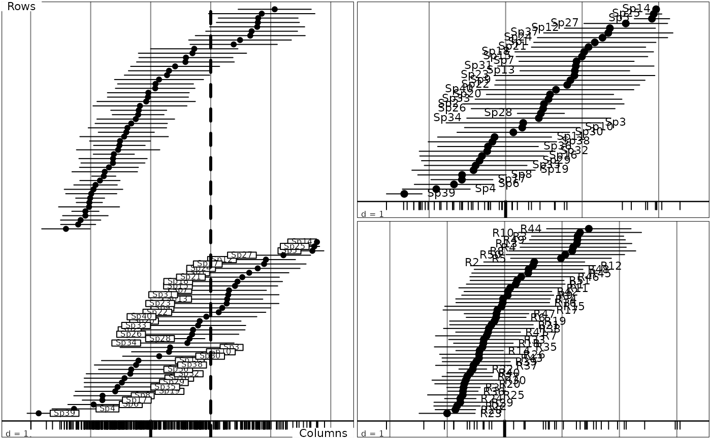
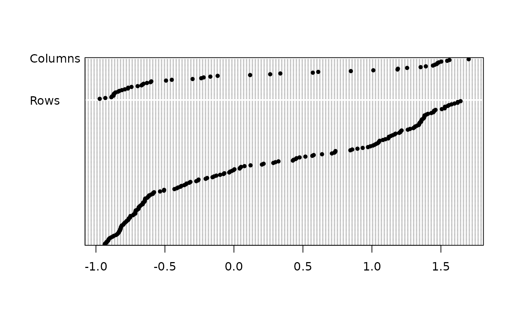
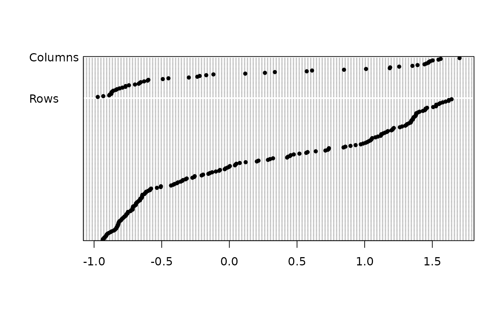

Reciprocal scaling after a correspondence analysis
score.coa.Rdperforms the canonical graph of a correspondence analysis.
Usage
# S3 method for coa
score(x, xax = 1, dotchart = FALSE, clab.r = 1, clab.c = 1,
csub = 1, cpoi = 1.5, cet = 1.5, ...)
reciprocal.coa(x)Arguments
- x
an object of class
coa- xax
the column number for the used axis
- dotchart
if TRUE the graph gives a "dual scaling", if FALSE a "reciprocal scaling"
- clab.r
a character size for row labels
- clab.c
a character size for column labels
- csub
a character size for the sub-titles, used with
par("cex")*csub- cpoi
a character size for the points
- cet
a coefficient for the size of segments in standard deviation
- ...
further arguments passed to or from other methods
Details
In a "reciprocal scaling", the reference score is a numeric code centred and normalized of the non zero cells of the array which both maximizes the variance of means by row and by column. The bars are drawn with half the length of this standard deviation.
References
Thioulouse, J. and Chessel D. (1992) A method for reciprocal scaling of species tolerance and sample diversity. Ecology, 73, 670--680.
Examples
layout(matrix(c(1,1,2,3), 2, 2), resp = FALSE)
data(aviurba)
dd1 <- dudi.coa(aviurba$fau, scan = FALSE)
score(dd1, clab.r = 0, clab.c = 0.75)
recscal <- reciprocal.coa(dd1)
head(recscal)
#> Scor1 Scor2 Row Col Weight
#> R12Sp1 -1.4223264 -1.8505207282 R12 Sp1 0.00132626
#> R44Sp1 -2.2557912 -1.8885813170 R44 Sp1 0.00132626
#> R46Sp1 -1.2464842 -2.0492095800 R46 Sp1 0.00132626
#> R3Sp2 -1.5188080 -0.7740337809 R3 Sp2 0.00265252
#> R11Sp2 -0.5136887 -0.0006023528 R11 Sp2 0.00132626
#> R19Sp2 -0.2777474 -0.7370905113 R19 Sp2 0.00132626
abline(v = 1, lty = 2, lwd = 3)
sco.distri(dd1$l1[,1], aviurba$fau)
sco.distri(dd1$c1[,1], data.frame(t(aviurba$fau)))

# 1 reciprocal scaling correspondence score -> species amplitude + sample diversity
# 2 sample score -> averaging -> species amplitude
# 3 species score -> averaging -> sample diversity
layout(matrix(c(1,1,2,3), 2, 2), resp = FALSE)
data(rpjdl)
rpjdl1 <- dudi.coa(rpjdl$fau, scan = FALSE)
score(rpjdl1, clab.r = 0, clab.c = 0.75)
if (requireNamespace("MASS", quietly = TRUE)) {
data(caith, package = "MASS")
score(dudi.coa(caith, scan = FALSE), clab.r = 1.5, clab.c = 1.5, cpoi = 3)
data(housetasks)
score(dudi.coa(housetasks, scan = FALSE), clab.r = 1.25, clab.c = 1.25,
csub = 0, cpoi = 3)
}
 par(mfrow = c(1,1))
score(rpjdl1, dotchart = TRUE, clab.r = 0)

par(mfrow = c(1,1))
score(rpjdl1, dotchart = TRUE, clab.r = 0)
